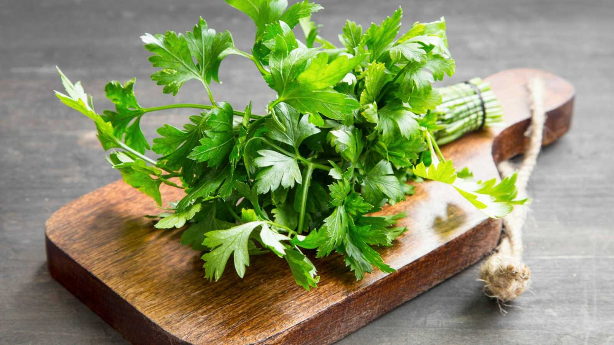
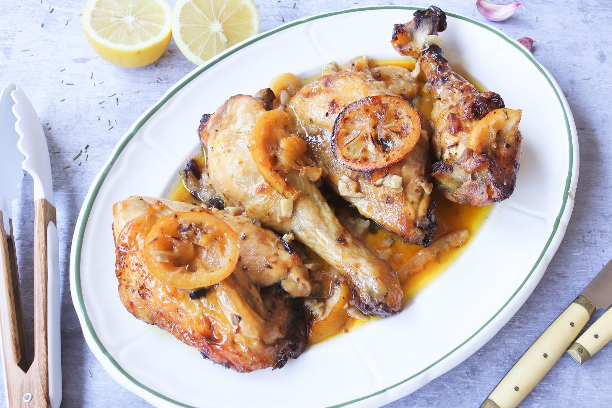

Tu Mejor Receta: Pollo al Limón

Ingredientes:
- Pechugas de pollo
- Limones
- Aceite de oliva
- Ajo picado
- Sal y pimienta
- Perejil
Instrucciones:
- Marinado:
Mezcla jugo de limón, aceite de oliva, ajo picado, sal y pimienta.
Marina las pechugas de pollo en la mezcla durante al menos 15 minutos.
- Parrilla:
Precalienta la parrilla a fuego medio.
Cocina las pechugas de pollo durante 6-8 minutos por cada lado.
- Servir:
Exprime limón fresco sobre el pollo antes de servir.
Acompaña con tus guarniciones favoritas.

¡Disfruta de tu delicioso platillo! No olvides añadir una pizca de perejil para darle el toque final.